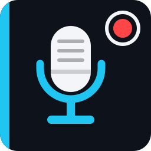

FiveM · intervjuopptak
Intervjueren
Video + lyd
MP4
Kun lyd
MP3
Status
Klar
00:00:00
Start opptak
Mikrofon
Spill og talechat
Lagres i
Endre
Siste opptak
Åpne mappe
Ingen opptak ennå.
Innstillinger
Video
Skjerm
Videokoder
Oppløsning
Opprinnelig
1440p
1080p
720p
FPS
30
60
Kvalitet
Lav
Middels
Høy
Lyd
Spill og talechat (systemlyd)
Volum
Min mikrofon
Volum
Støydemping på mikrofon
Format for kun lyd
MP3 (minst, fungerer overalt)
M4A / AAC
WAV (ukomprimert)
Hurtigtaster
(klikk i en boks og trykk kombinasjonen)
Vis / skjul overlegg
Start / stopp opptak
Pause / fortsett
Sett markør
Annet
Start Intervjueren når Windows starter (venter i systemstatusfeltet)
Vis liten REC-indikator over spillet
Hjørne for indikator
Øverst til venstre
Øverst til høyre
Nederst til venstre
Nederst til høyre
Behold rå sikkerhetskopier (i .raw-mappen)